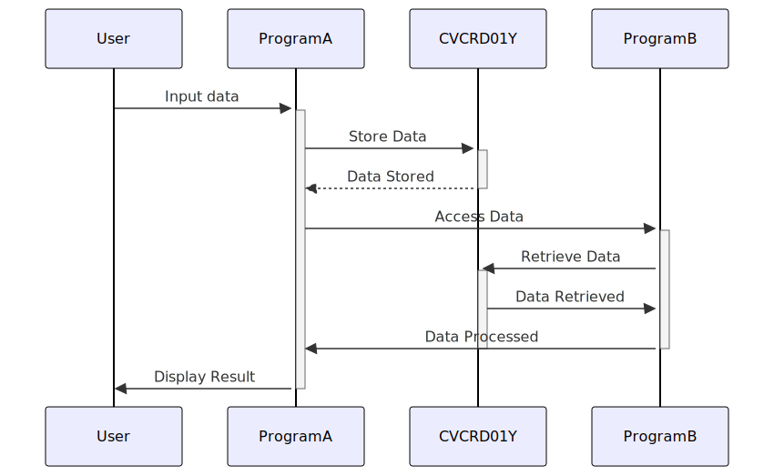

Gerado em: 1º de outubro de 2024
Título do Documento: Sistema de Cartão de Crédito - Especificação da Estrutura de Dados para Operações de Cartão de Crédito (CVCRD01Y)
Descrição Resumida:
Este documento descreve a estrutura de dados utilizada em um sistema de gerenciamento de cartão de crédito, com foco específico nas informações manipuladas pela copybook CVCRD01Y em COBOL. Esta estrutura define como o sistema armazena e acessa elementos de dados cruciais relacionados a contas de cartão de crédito, informações do cliente e interações do usuário.
Histórias do Usuário: Como Desenvolvedor do Sistema de Cartão de Crédito, preciso definir uma estrutura de dados padronizada para garantir o tratamento consistente e confiável das informações do cartão de crédito em diferentes módulos e programas.
Épico Relacionado: 8 - Gestão de Dados do Cliente
Requisitos Técnicos:
CC-ACCT-ID foi projetado para armazenar um identificador exclusivo para cada conta de cartão de crédito.CCARD-AID-ENTER começa com o valor “ENTER”, provavelmente sinalizando uma ação do usuário como pressionar a tecla “Enter”.REDEFINES para permitir que os mesmos dados sejam interpretados de maneiras diferentes. Por exemplo, CC-ACCT-ID pode ser visto tanto como alfanumérico (texto) quanto puramente numérico.Modelos Relacionados
CC-ACCT-ID: Identificador da ContaCC-CUST-ID: Identificador do ClienteCCARD-AID-ENTER: Ação da Tecla EnterCCARD-AID-CLEAR: Ação da Tecla LimparCCARD-LAST-PROG: Último Programa ExecutadoCCARD-NEXT-PROG: Próximo Programa a ser ExecutadoCCARD-RETURN-FLAG: Sinalizador para Indicar Retorno à Operação AnteriorConfigurações:
Melhorias de Código:
Melhorias de Segurança:
Diagrama Conceitual:
–Made by “Smart Engineering” (by Compass.UOL)–